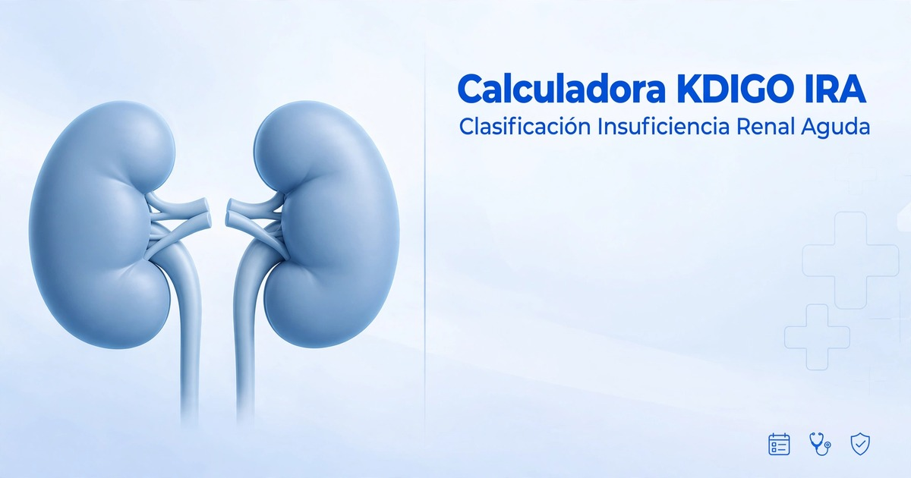

Calculadora de clasificación KDIGO para Insuficiencia Renal Aguda (IRA)
Calcula el grado de IRA con creatinina y diuresis según la guía KDIGO 2012. Fórmula validada: diuresis / peso / horas.
Parámetros clínicos
Todos obligatoriosRatio
-
Δ Crea
-
Diuresis
-
mL/kg/h

Tabla KDIGO 2012 (referencia)
| Etapa | Creatinina | Diuresis |
|---|---|---|
| 1 | ≥0.3 mg/dL o 1.5-1.9x | <0.5 mL/kg/h 6-12h |
| 2 | 2-2.9x basal | <0.5 mL/kg/h ≥12h |
| 3 | ≥4.0 o ≥3x o RRT | <0.3 ≥24h o anuria ≥12h |
Fuente: KDIGO Clinical Practice Guideline for AKI, Kidney Int Suppl 2012. Δ0.3 en 48h, ratio 1.5x en 7 días.
¿Cómo funciona?
- Ingresa peso, creatininas y diuresis total con horas.
- Se calcula diuresis / peso / horas = mL/kg/h.
- Obtienes estadio y criterios cumplidos con rigor KDIGO.
No almacena datos. Cálculo local en tu navegador.